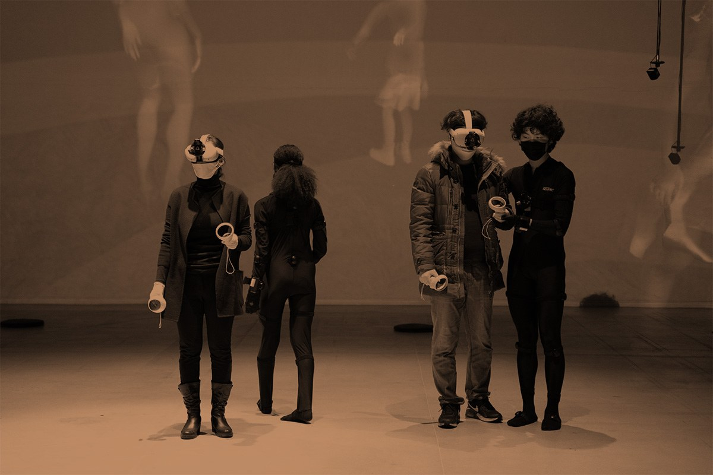
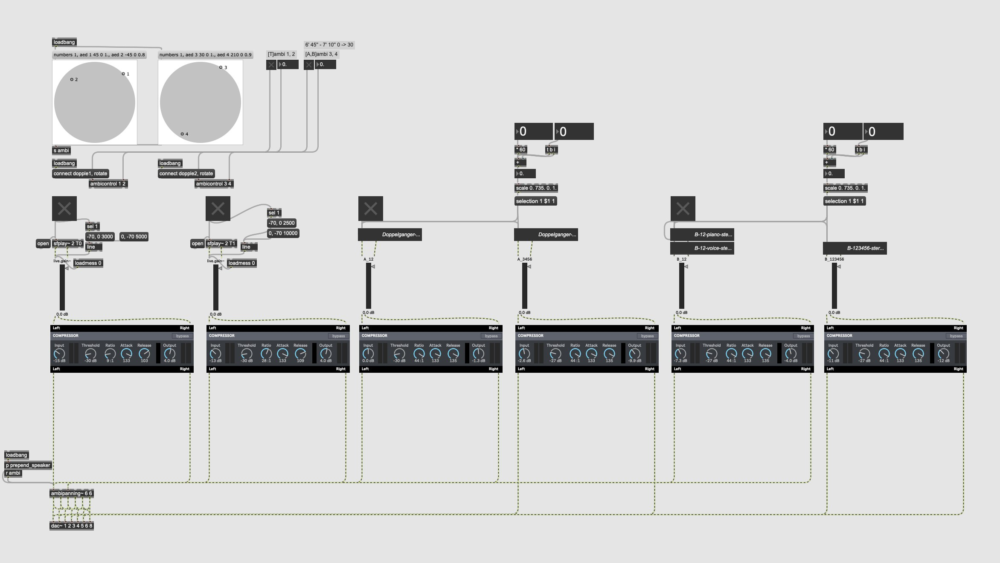
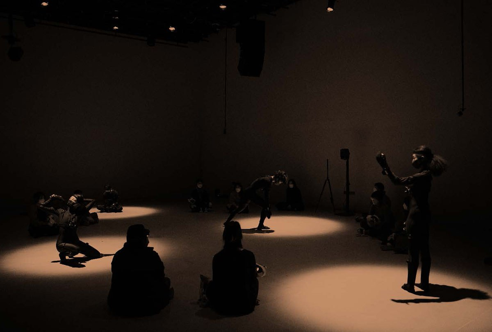
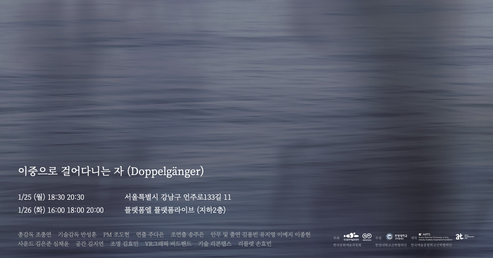

Doppelgänger





Reality and Virtuality: The Coexistence
"Doppelgänger" is a VR performance selected for the 2021 ARKO Art & Tech project. It explores the intricate relationship between the physical self and the virtual alter ego in the digital age.
The performance creates a space where reality and virtuality intersect, questioning the definition of existence. Through the medium of VR, the audience experiences a unique synchronization with the performer, blurring the lines between the observer and the observed.
The sound design focuses on enhancing this immersive experience, using spatial audio techniques to bridge the gap between the virtual environment and the physical venue. The music evolves in real-time, reacting to the performer's movements and the changing landscapes within the VR space.
Credits
- General Director: Cho Chungyeon
- Technical Director: Ban Sunghoon
- Director: Ju Daeun
- Assistant Director: Song Jueun
- PM: Cho Dohyun
- Choreography & Cast: Kim Yongbin, Yu Jiyoung, Lee Yeji, Lee Jonghyun
- Sound: Kim EunJun, Shim Chaeyoon
- Space Design: Kim Jiyeon
- Lighting: Kim Hyomin
- VR Graphics: Birdhand
- Technology: Reconf Labs
- Leaflet Design: Son Hyobin
- Host: ARKO Art & Tech
- Organizer: Hanyang Univ. IACF
- Production: K-Arts IACF (AT Lab)